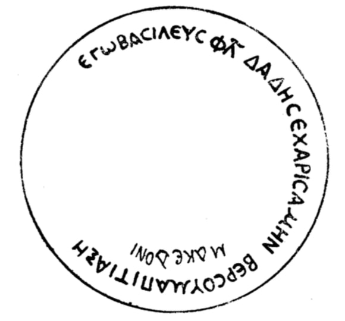

ბერძნულწარწერიანი ვერცხლის ლანგარი არმაზისხევიდანGreek inscription on a silver dish from Armaziskhevi
ბერძნულწარწერიანი ვერცხლის ლანგარი არმაზისხევიდან
Greek inscription on a silver dish from Armaziskhevi
შინაარსი / Summary
მიძღვნითი Dedicatory
ბიბლიოგრაფია Bibliography
კრიტიკული გამოცემა Interpretive Edition
ἐγὼ βασιλεὺς Φλ(αύιος) Δάδης ἐχαρισάμην Βερσουμᾷ πιτιάξῃ Μακεδόνι
დიპლომატიური გამოცემა Diplomatic Edition
ΕΓΩ ΒΑΣΙΛΕΥΣ ΦΛ ΔΑΔΗΣ ΕΧΑΡΙΣΑΜΗΝ ΒΕΡΣΟΥΜΑ ΠΙΤΙΑΞΗ ΜΑΚΕΔΟΝΙ

Silver tray from Armaziskhevi, 1940
{'ka': 'მე, მეფე ფლავიოს დადესმა მივუძღვენ ბერსუმა პიტიახშს (ეს ლანგარი).\n მაკედონს', 'en': '"I, King Fl(avius) Dades, bestowed (this) upon Bersoumas, pitiax"'}
{'ka': 'ასოთა მოხაზულობით (α ჩატეხილი შუა ხაზით, მრგვალი ε, σ, ω, μ, β, დამახასიათებელი ξ),\n შემოკლების ნიშნით (Φ˘Λ), რომაული ხანისათვის დამახასიათებელი – ιος სახელების – ις დაბოლოებით წარმოდგენით (Μακεδόνι) წარწერები I საუკუნეებით\n უნდა დათარიღდეს. სამარხში აღმოჩენილი თანმხლები ინვენტარისა და მონეტების მიხედვით ნივთი (და მასზე გამოყვანილი წარწერა) II-III AD სს–ით თარიღდება. სიტყვა Μακεδόνι უნდა იყოს სახელი Μακεδών ან Μακεδόνις მიცემით ბრუნვაში, ე.ი. როგორც მიეძღვნა ნივთი ბერსუმას, ასევე მიეძღვნა, თუ ეკუთვნოდა ის\n მაკედონიოსს. Μακεδόνι, როგორც დავინახეთ, ნაწერია სრულიად სხვა ხელით, მაგრამ ეს არ ნიშნავს იმას, რომ აუცილებელია ამ ორი წარწერის სხვადასხვა დროით\n დათარიღება. შესაძლებელია ერთ დროს შესრულდა ეს წარწერები, მაგრამ სხვადასხვა სტილით. არამცთუ წარწერებში, ხელნაწერებშიც Α – ასეთი სახით ჩნდება\n ჩვენი წელთაღრიცხვის მიჯნაზე და ვრცელდება I-II სს–ში. ძირითადი, საგულდაგულოდ შესრულებული ბერძნული წარწერის მიმართ აღსანიშნავია: შემოკლება ΦΛ და მიცემით ბრუნვაში გამოტოვება ι subscriptum–ისა.\n ასოთა მოხაზულობიდან ყურადღებას იქცევს მიდრეკილება სიმრგვალისაკენ. შემოკლების შტრიხი ˘ სახით. ξ–ს ვხვდებით ამ მოხაზულობისას I ს–ში, ასევე\n უნდა ითქვას სხვა ასოების მიმართაც. ამ ნიშნების მიხედვით, წარწერა ჩვენი წელთაღრიცხვის I საუკუნეებით უნდა დათარიღდეს. თვით სამარხი 251 წელზე\n ადრინდელი არ არის, მასში აღმოჩენილი მონეტების მიხედვით. თვით ბერძნული წარწერებიც დაახლოებით ამ დროისა (III ს–ის დასაწყისისა, ან II ს–ის\n მიწურულისა) უნდა იყოს. ნივთის მბოძებელი არის მეფე ფლავიოს დადესი, მფლობელი – ბერსუმა პიტიახში. მაკედონი ან ბერსუმას მეორე სახელია, ან ბერსუმას შემდგომი პატრონია ამ ნივთისა.\n წარწერაში ყურადღებას იპყრობს იბერიის ისტორიულ პირთა მოხსენიება: მეფეს, დადესს, დამატებით აქვს ფლავიუსების დინასტიის სახელი, რაც ენიჭებოდათ ამ გვარის\n მიერ დაფასებულ პირებს. ფლავიუსი და მაკედონი – ბერძნულ–რომაული სახელებია. ბერსუმა – სირიული (=ძე მმარხველისა), დადეს – ძირის სახელები გავრცელებულია მთელ ხმელთაშუაზღვის\n აუზის ქვეყნებში, მისი ეტიმოლოგიის შესახებ სხვადასხვა აზრი არსებობს (ირანული, ბერძნული...). სახელი "ბერსუმა" (რაც პიტიახშს ეწოდება) ქართული სინამდვილისთვის ამ წარწერამდე უცნობი იყო. ესაა სირიული სახელი Bar Saumā და ნიშნავს "ძე მმარხველისა". როგორც ვხედავთ,\n ქართველ პიტიახშებს ხშირად ჰქვიათ სხვადასხვა წარმოშობის სახელები (ბერსუმა, ასპავრუკი, პუბლიკიოს აგრიპა...), მაგრამ ეს სრულებით არ ნიშნავს იმას, რომ უცხო სახელის მატარებელი\n მაინცდამაინც უცხოელი იყო. პ. ინგოროყვა სახელ "ბერსუმას" კითხულობს "ბერცუმად" (ძველ ქართულში დამოწმებული სახელის "ბარცომი" და "ბარაცმანის" ანალოგიით, მაგრამ ისიც\n გასარკვევია "ბარცომი" და "ბარაცმანი" რა წარმოშობისა და ეტიმოლოგიისა არიან). სახელი "ბერსუმა" ბერძნულშივე გვხვდება მეორე ფორმით: Βαρσουμᾶς. ამგვარად, სირიული Bar Saumā\n (ფშვინიერი s–თი) ბერძნულად გადმოიცემა Βερσουμᾶς || Βερσουμᾶς ფორმით).', 'en': 'According to the shape of the letters ( α with broken crossbar, ε, σ, ω, μ, β - round, ξ is peculier), abbreviation (Φ˘Λ), representing the names ended on ιος with ις - characteristic to Roman period (Μακεδόνι), the inscription can be given the date to the I century. On the basis of the dating of the other items that were found in the graveyard, the dish (and its inscription) can be dated to II-III c.\nΜακεδόνι should be the dative case form for the name Μακεδών or Μακεδόνις, that means that as the item was dedicated to Bersuma, and also it was designated for Makrdonis. Μακεδόνι, as we see, is written with completely different handwriting, thus, it is necessary to give these inscriptions two different dates. They might be of the same period but different style. Not only in the inscription but also in the scratched writing we see A that only appears at the beginning of A.D. and is spread in I-II c.\nTowards the main Greek inscription notable components are: abbreviation ΦΛ and lacking the ι subscriptum in dative case.\nIn terms of shaping the letters, the tendency of round letters is notable. Abbreviation represented with ˘ . The shape of ξ is common for I century, same can be said about the other letters. According to those features the inscription can be given 1st century AD. The grave itself can not be earlier than 251 according to the coins found in it. The Greek inscription can be of the same time (beginning of the III century or end of II century).\nThe person who dedicates the item is Flavios Dades, owner - Bersuma Bidaxsh. Macedon is either the second name of Bersuma, or Bersuma is the later owner of the item. The names of historic people from Iberia are notable: Kind Dades has an additional name from the Flavius dynasty, that was given to those who were regarded as honorable by this family. Flavius and Macedon are Greco-Roman names. Bersuma is Syrian (= a son of who was fasting), the names with the root Dades are common in the entire mediterranean region, there are different versions of its origin (Iranian, Greek…).\nThe name “Bersuma” (given to Bidaxsh) was unknown for Georgian context before discovering this inscription. It is a Syrian name Bar Saumā that means “the son of who is fasting”. As we see the Georgian Bidaxshes are called by the names of different origins (Bersuma, Aspavruki, Publikios Agripa…), but that does not mean that the person with this name was a foreigner. P. Ingorokva considers the name “Bersuma” as “Bertsuma” (based on the analogy of ancient Georgian names “Bertsomi” and “Baratsmani”, but the etymology of those two, “Bertsomi” and “Baratsmani” is unclear in itself). The name “Bersuma” is also common to Greek: Βαρσουμᾶς. Thus, Syrian Bar Saumā (with aspirate s) is represented in Greek as Βερσουμᾶς || Βερσουμᾶς.'}
<div type="edition" xml:lang="ka" ana="mtavruli" xml:space="preserve">
<ab>
<lb n="1"/><w lemma="ქრისტე"><expan><abbr>ქ</abbr><ex>რისტ</ex><abbr>ე</abbr></expan></w>
<w lemma="განსუენება"><expan><abbr>გა</abbr><ex>ნ</ex><abbr>ო</abbr><ex>ჳ</ex><abbr>ს</abbr><ex>უ</ex><abbr>ენე</abbr></expan></w>
<w lemma="სულ">სოჳ<lb n="2" break="no"/>ლსა</w>
<name nymRef="ვაჩა">ვაჩაჲს<lb n="3" break="no"/>ასა</name>
<name nymRef="გურა"><expan><abbr>გო</abbr><ex>ჳ</ex><abbr>რაჲ<lb n="4" break="no"/>სასა</abbr></expan></name>
<name nymRef="მირა"><expan><abbr>მ</abbr><ex>ი</ex><abbr>რა</abbr><ex>ჲ</ex><abbr>ს</abbr><ex>ა</ex><abbr>ს</abbr><ex>ა</ex></expan></name>
</ab>
</div>